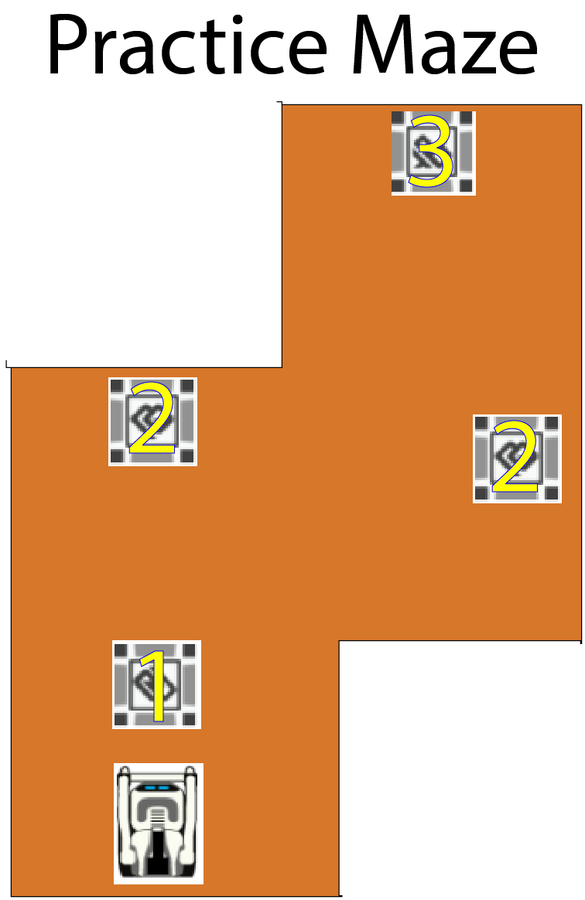

Objective: In this project, you will try to work effectively with your group (6-7 students per group) to make a Calypso program that helps Cozmo solve a maze. This requires you and your group to apply the knowledge that was taught during Cozmo Days in class into an application.
To review Calypso materials, please go on Professor Touretzky's tutorial on Calypso
News
Calypso has been updated recently as it is getting close to the final version. There are more functions added so that you don't need to complete the tasks complicatedly.
However, it still has a lot of bugs (ikr, so sad :[). Therefore, we allow you to interfere Cozmo while it's running to adjust its head or the cubes.
Plus, Cozmo works best when it's fully charged. I noticed this while running demo. Please put Cozmo in the charger whenever you can to have it fully charged for the best performance.
One thing to notice is that the new Calypso is testing a new feature that allows Cozmo to grab the cubes from different sides. It may take Cozmo longer to be able to grab the cube as it moves around a lot to find the perfect position. Please be patient and don't bully him :]
Rules
The program must be completely automated. No controller function is accepted.
The only time when you can interfere the process is when Cozmo has troubles recognizing the cubes although they are in its vision.
Instructions

Each of the 3 cubes provided in the Cozmo package (#1,#2,#3) will be placed in the maze. They will help guide your way to finish the maze.
Whenever Cozmo sees a cube, the rules are as follows:
Cube 1: You can go straight Cube 2: You can turn left or right Cube 3: End(game). You can't either turn left, right, nor go straight. You can only go backwards. It could also be the exit of the maze.
To go past a cube, you can program Cozmo to go the other way to avoid hitting the cube. You can also grab it up and drop somewhere so it does not block you from moving. Anything works!
Saving your work
We have 3 periods of AP Comp. Sci. Principles working on this project at the same time. After you finish with your daily work, please:
- Save your .calypso file with the following name format: P[period number]G[group number].calypso (For example: P3G3.calypso)
- Upload it on the assignment in Google Classroom
- Delete the file on the computer
- Create new file on Calypso and make sure that your work is not there.
On the next day, simply download the file from Google Classroom to continue working and repeat these steps at the end of the day.
Doing this helps this project to be fair and prevents other groups to "observe" your code. It is absolutely wonderful if you help your friends complete this project and earn extra credit (feel free to do so). However, copying code is not allowed and we are strongly against it.
Demonstration
Here is the work that I have done to demonstrate you what it looks like whenCozmo runs on the maze. This includes 2 videos: one to show what Cozmo does and one to show what Cozmo sees.
Notes: You can see that I used my hand to adjust Cozmo's position after it turned right at the 2nd cube. This is one of the errors of the latest Calypso updates. That's why we allow you to interfere the process and adjust Cozmo's position, head, or the cubes.
What Cozmo does:
What Cozmo sees:
Note: This is from a different run. Really sorry that it is not smooth since I am not good at recording :[